AI makes us code faster
— and makes code harder to trust
GenAI is shifting software development away from mechanical execution toward work that actually requires human judgment: understanding requirements, making architectural decisions, ensuring the code solves the right problem. The developer role moves from writing code to conducting — defining intent, reasoning through complexity, reviewing outcomes.
But there's a catch. The volume of AI-generated code far exceeds what a human can quickly consume. The code works, until it doesn't — and when something breaks, it's much harder to trace why. "Vibe coding" feels productive until you hit a wall you can't debug your way out of.
The deeper issue is structural. Traditional software development is built around object-oriented thinking, where behavior lives inside functions and classes you can point to. GenAI-assisted development doesn't fit that model. Behavior becomes distributed, contextual, and emergent — shaped by the model, the prompt, conversation history, and available tools. A small change in wording leads to a very different outcome.
How might we help teams design and control system behavior?
This framed the entire Kiro product. The answer wasn't better prompts — it was better control surfaces. That meant rethinking workflows entirely, not just the UI.
6 primary iterations over 9 months
We explored a wide range of concepts at different fidelities, working immersively with our engineering team — who are also our users. We prototyped across different interaction models, from traditional chat interfaces to more structured workflow approaches, testing various levels of automation versus user control.
We ran user studies, interviews, and participatory design work sessions with AWS Heroes and the broader developer community. Each iteration incorporated feedback and tightened our understanding of what developers actually needed.
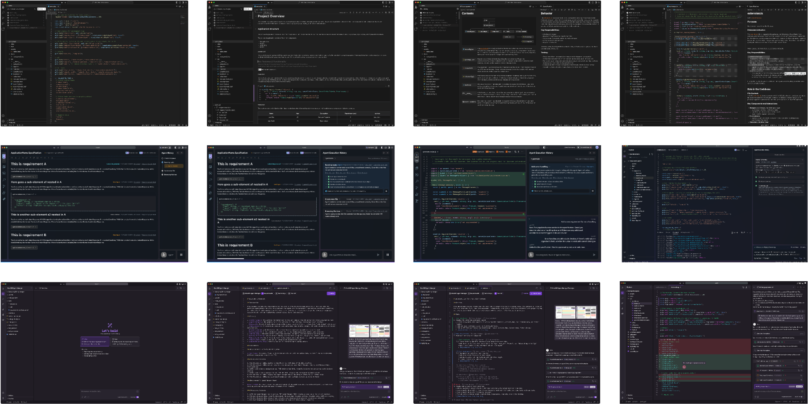
From a natural language idea
to production-ready code
Requirements → Send a simple prompt in chat and the agent helps generate a markdown file where the user and agent work together, detailing, refining, iterating until it's ready to become requirements.
Tech Design → The agent generates a technical design covering architecture, data flow, interfaces, data models, error handling, and test strategy. This is the translation layer between what the user wants to build and what the system actually needs to include.
Tasks → An execution plan linked back to the original requirements. This is also the primary interface where the agent surfaces execution status as it works through each step.
Code → With spec, technical design and task list as execution plan in place, the agent produces viable code. The developer then continues with vibe coding — iterating and refining — until the output is robust and production-ready.
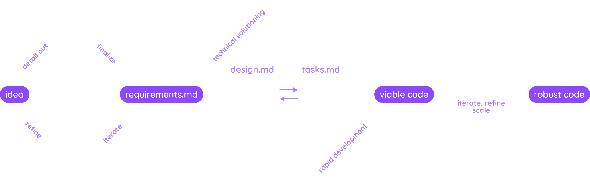
Spec-driven Development
Instead of jumping from idea straight to code, spec-driven development creates a structured middle layer where developers and agents build shared understanding first.
Spec workflow ingress
The entry point was its own design challenge. When we introduced spec-driven development, many users weren't sure when to use it versus just vibe coding — so this moment of choice needed to do two things at once: make the developer's intent explicit from the start so there's a reliable ingress into the spec workflow, and serve as a discovery moment for developers encountering the spec-driven development for the first time.
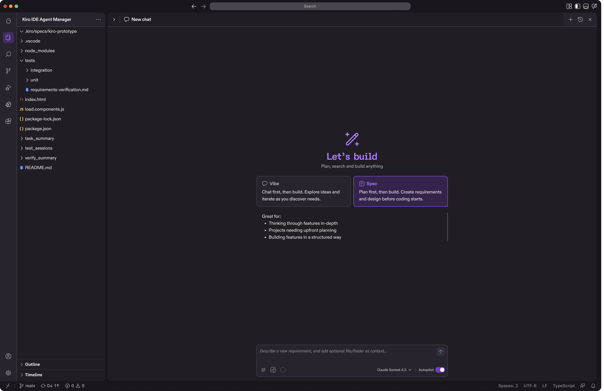
Requirements
Requirements externalize intent—making it explicit, structured, inspectable, and shareable. Instead of guessing what the AI will do, users define exactly what they want in a requirements document, which becomes a persistent, shared source of truth that both the human and the agent can reference.
In this model, requirements act as the interface between humans and AI: people articulate the intent and constraints, while the agent determines how to implement them. Because the intent is visible and structured, it creates a clear plan that both sides can follow and iteratively refine with the human in the loop. This shifts the focus from repeatedly rewriting code or prompts to designing how the system should behave—leading to fewer rewrites, more predictable outcomes, and more effective collaboration between people and AI agents.
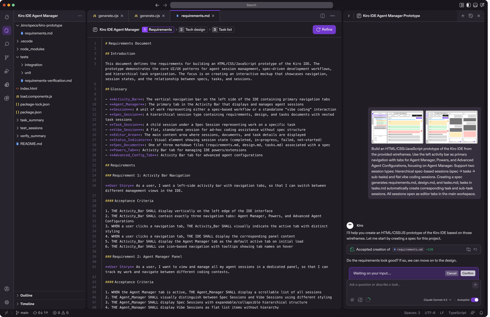
Technical Design
Once you've nailed down the requirements, you work with the agent to create a technical design. This is where you spell out exactly what needs to be built - the architecture, data flow, interfaces, all that stuff. It's basically translating your feature idea into something the system can actually understand and implement.
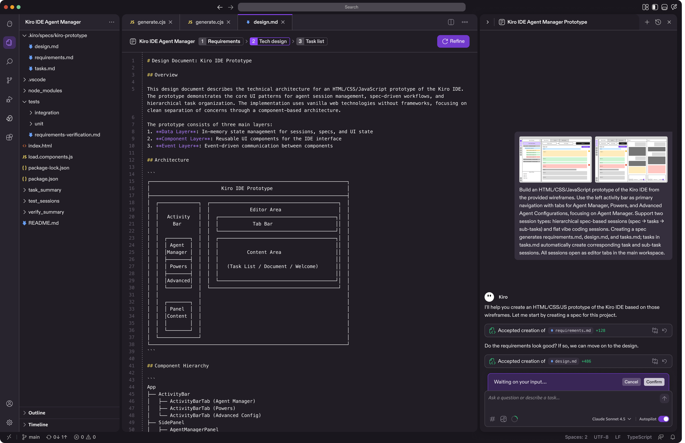
Task List
The task list breaks down your technical design into actionable steps. Think of it as your execution roadmap - it takes everything from the technical design and turns it into a clear sequence that both you and the agent can follow. This way, instead of jumping around or missing pieces, you have a structured plan that keeps development moving in the right direction. It is also the primary interface where the agent shows execution statuses as it executes through the tasks.
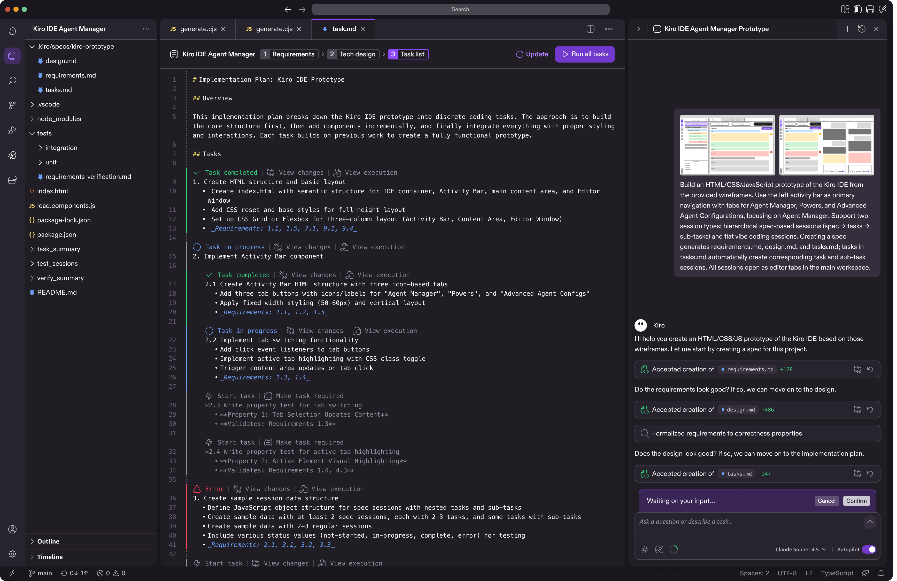
Vibe Coding for Refinement
Spec handles complexity. Vibe coding handles everything else. Once you have a structured foundation, you can talk to your codebase naturally — "make this faster," "add error handling here," "what if we tried a different approach?" — without needing a whole plan first.
Supervised mode lets users approve agent-generated code step by step, pausing at the file level before moving forward. Users can also step in anytime mid-execution. The next iteration will pause at logical groups of edits rather than individual files, reducing friction while keeping the human in the loop.

Control surfaces for agentic development
3 key features to guide the AI agent, automate workflows further, provide context more effectively with better context window management.
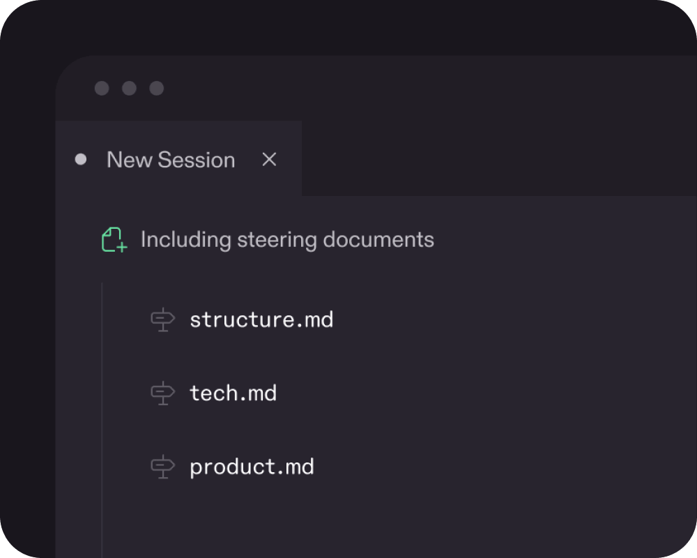
Steering
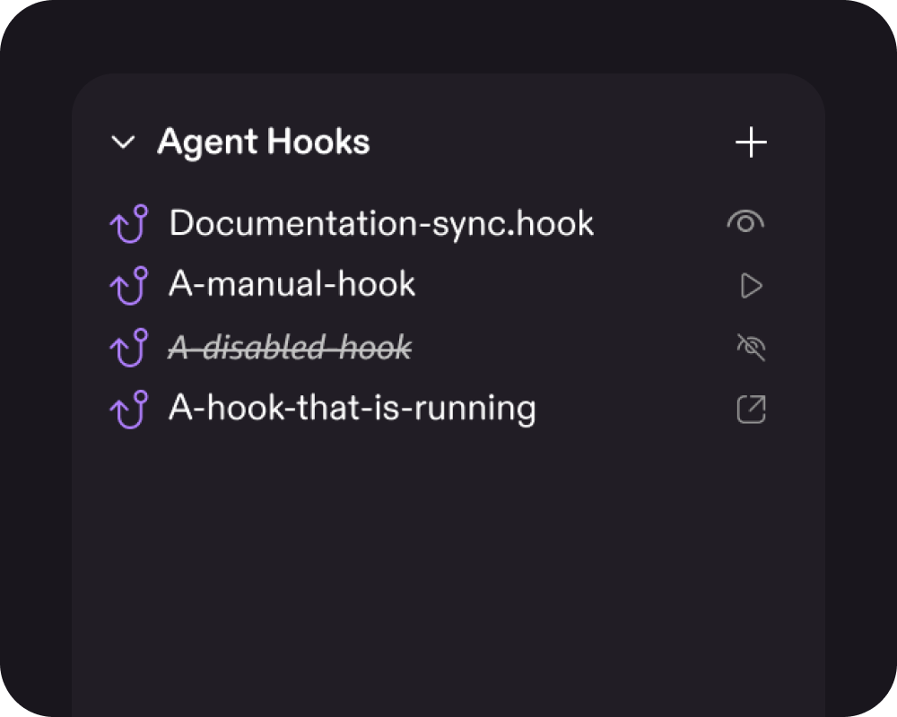
Hooks
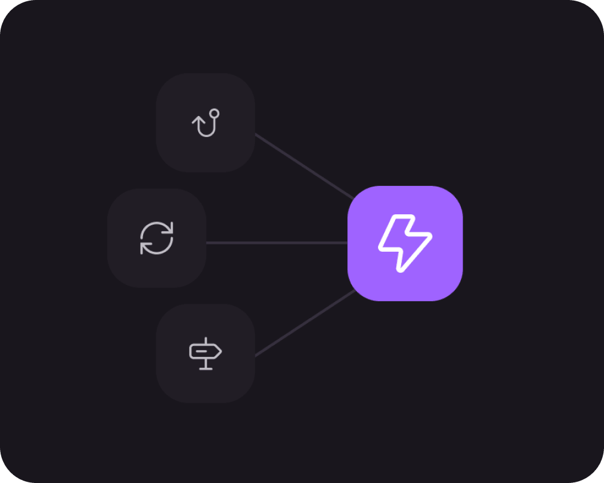
Powers
Steering Rules
Persistent instructions that teach Kiro how your team works. Write your conventions once — "use TypeScript," "follow our naming standards" — and Kiro applies them automatically across every interaction. Consistent code, no repetition, and the same agent behavior for everyone on the team.
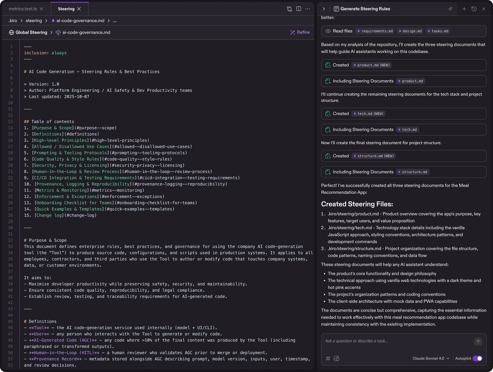
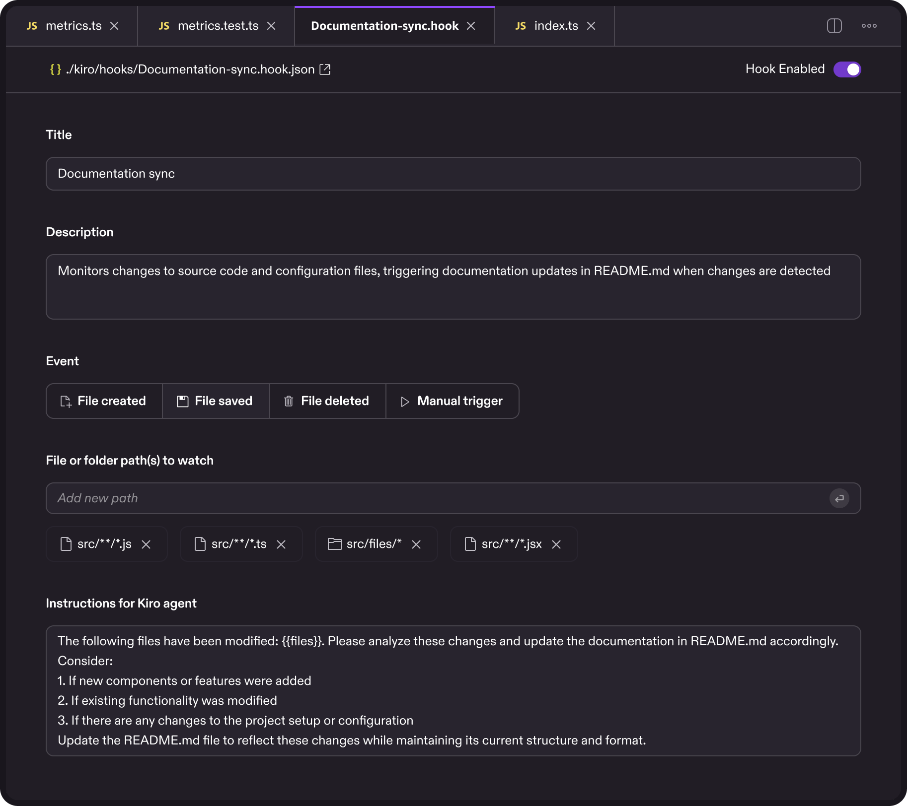
Agent Hooks
Automated triggers that execute predefined agent actions when certain events occur — a file save, a completed task. Instead of manually asking Kiro to run tests or check for issues, you set it up once and it runs in the background. The repetitive overhead disappears; you just code.
Kiro Powers
Dynamic tool loading through MCP. Too little context and the agent guesses; too much and it slows down. Kiro Powers solve this by connecting to external tools on demand rather than loading everything upfront. One-click install, minimal setup, and an open ecosystem where anyone can build and share tools.
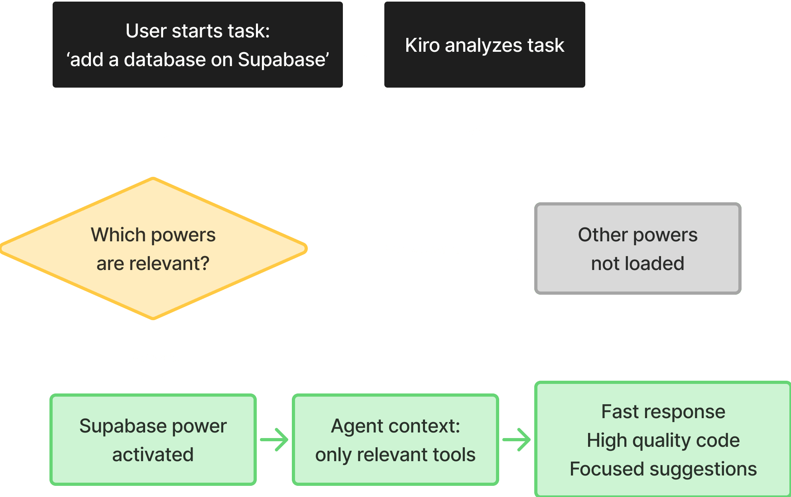
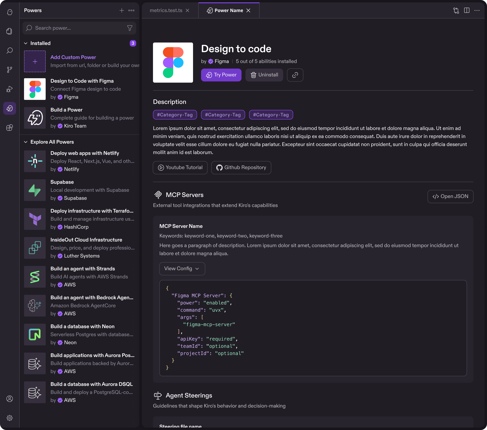
Why we invested early
Building a design system before the product is fully defined might seem premature, but it was one of the best early investments we made. When you're navigating genuine unknowns, a lightweight system eliminates the micro-decisions — button padding, spacing tokens — so you can focus on the harder questions about how the product actually works.
It also enables parallel work at speed. Once more than one person is designing, a shared system means designers, engineers, researchers, and PMs can all move forward using the same visual language without constant check-ins. And because design tokens map directly to code tokens, engineers could prototype faster and we avoided the typical "rebuild it properly before launch" reckoning.
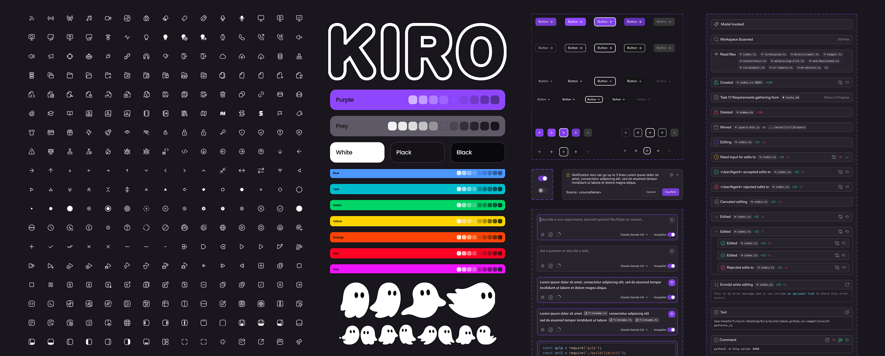
Spec-driven development feature adoption and
6 months post-launch metrics
82% of users adopted spec-driven development — significant uptake for a completely new workflow. Satisfaction followed: 83% positive ratings on spec creation, 73% on task creation.
100,000 daily active users is meaningful traction for a new product category. 35,000 paid conversions shows developers finding enough value to pay for more. The number I'm most proud of: 92% positive ratings from power users — the developers who put Kiro to work every day.
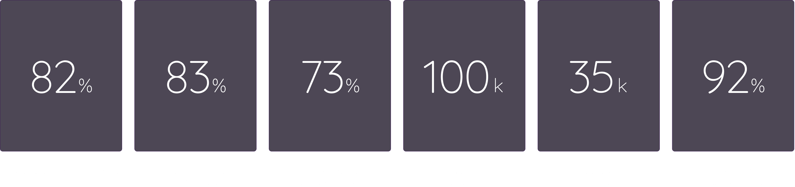